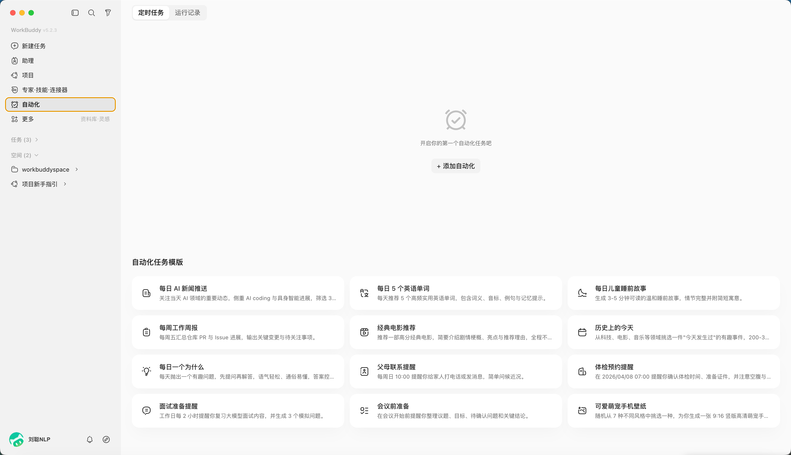
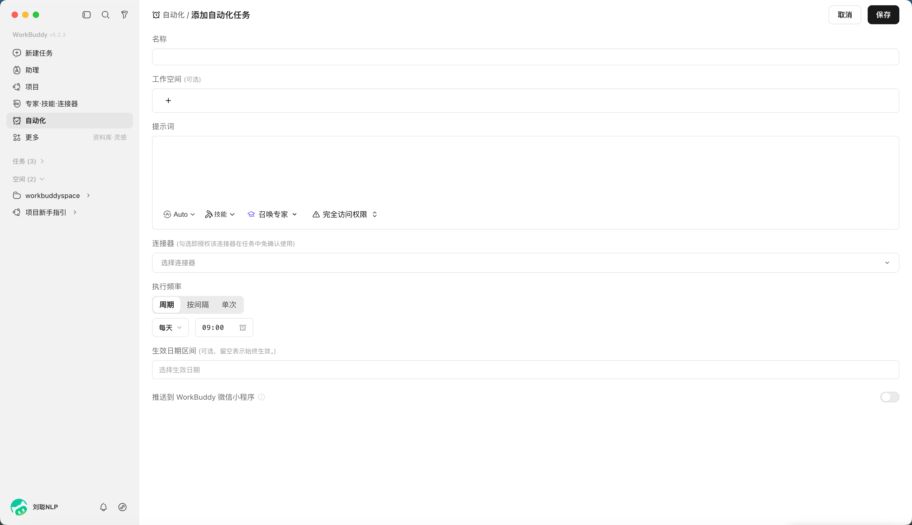
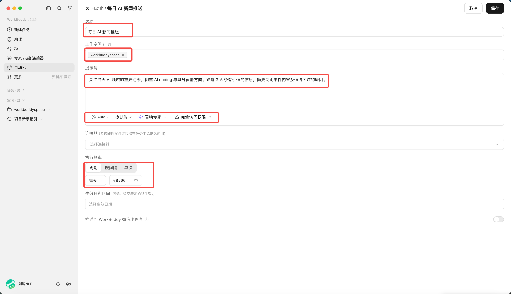

第 10 章 WorkBuddy 自动化任务
真正消耗人的，往往不是那些需要创造力的大任务，而是每天都要打开同样的页面、收集相似的信息、整理成同一种格式，再把结果发给同一批人。WorkBuddy 自动化的价值，就是把这些“时间固定、步骤相似、结果可检查”的工作变成可重复运行的 Agent 任务。
为什么 WorkBuddy 可以自动化
传统自动化通常要求人先把每一个步骤写成代码：打开哪个系统、点击哪个按钮、读取哪一列、遇到异常怎么分支。
WorkBuddy 的不同之处，是把“定时调度”与 Agent 的理解、工具调用和文件处理能力组合起来。你不必把所有细节都写成程序，但需要把目标、输入、边界和结果说清楚。
自动化配置保存在本地客户端，包括任务名称、提示词、调度规则、工作目录和执行状态。到达设定时间后，WorkBuddy 会沿用当前登录身份发起 Agent 任务，并按提示词调用模型、Skill、MCP 或连接器，在指定工作目录完成查询、汇总和文件处理。
真正让任务稳定运行的是五个要素：明确的触发时间、可重复的输入来源、足够具体的 Prompt、固定且受控的工作目录，以及能够判断成功或失败的验收条件。
自动化能用来做什么
最直观的用途是把每天、每周、每月都要重复的工作交给 WorkBuddy。价值不只在于少点几次鼠标，而在于任务不会因为忙碌而被遗忘，执行方法也不会随着不同的人临时变化。
| 场景 | 可以自动完成 | 典型产物 |
|---|---|---|
| 资讯与情报 | 定时搜索行业新闻、政策、竞品动态，去重后摘要 | 每日简报、风险提示、来源清单 |
| 日报与周报 | 汇总任务、日历、文档和数据变化，按固定结构生成报告 | 日报、周报、项目进度表 |
| 数据与表格 | 收集文件、合并表格、清洗字段、检查缺失和异常 | 对账表、异常清单、趋势图 |
| 文件管理 | 按日期和项目归档、批量重命名、抽取 PDF 或图片文字 | 归档目录、索引、处理日志 |
| 内容运营 | 收集选题、生成标题候选、整理素材、制作发布草稿 | 选题库、内容草稿、封面需求单 |
| 知识管理 | 定时整理收藏、会议纪要和灵感，补标签与来源 | 知识卡片、每周回顾、待消化列表 |
| 产品与研发 | 巡检日志、汇总 issue、检查依赖和构建结果 | 巡检报告、缺陷摘要、升级建议 |
| 个人事务 | 生成学习计划、阶段复盘、预约或提醒类任务 | 学习清单、提醒、执行记录 |
什么样的任务适合先自动化
可以用下面六个问题做判断。回答“是”越多，越适合作为第一批自动化任务：
- 会重复吗：至少每周发生一次，而不是一次性需求；
- 输入稳定吗：文件夹、网页、表格或连接器来源相对固定；
- 步骤相似吗：虽然内容变化，但处理方式基本一致；
- 结果可验收吗：能检查条数、字段、时间范围、来源或文件是否生成；
- 失败可恢复吗：失败后可以重跑，不会立即造成不可逆损失；
- 权限可控制吗：可以限定工作目录、账号和允许调用的工具。
最适合的起点，通常不是“替我运营整个公司”，而是“每天 8 点收集 10 条 AI 行业新闻，去重、保留链接，生成 Markdown 简报到指定目录”。范围越清楚，越容易发现问题并逐步改进。
从一句想法到可运行任务
创建自动化前，先把口头需求改写成一份小型任务说明。一个可靠的 Prompt 至少要回答：何时执行、读取什么、怎样处理、输出到哪里、怎样算完成、失败后怎么办、哪些动作禁止执行。
任务名称：每日 AI 行业简报
触发时间：每天 08:00，时区 Asia/Shanghai
工作目录：automation/ai-daily
输入：
- 检索过去 24 小时的 AI 产品、模型和行业新闻
- 仅使用可以访问并保留链接的公开来源
处理规则：
1. 合并重复事件，按产品、技术、商业三类整理
2. 每条包含标题、100 字摘要、来源、发布时间和链接
3. 无法确认发布时间或来源的内容放入“待核验”，不要编造
输出：
- 保存为 YYYY-MM-DD-ai-daily.md
- 正文最多 10 条，最后附来源清单创建一项自动化任务
在 WorkBuddy 打开“自动化”页面，可以查看已安排任务和历史执行记录。点击“添加”后，需要配置任务名称、工作空间、提示词、模型与技能、定时规则，以及是否把完成结果推送到 WorkBuddy 小程序。
| 配置项 | 作用 | 填写建议 |
|---|---|---|
| 名称 | 区分不同自动化任务 | 写清对象和频率，如“每日 AI 简报” |
| 工作空间 | 限定执行目录和文件保存位置 | 为每项自动化使用独立目录，避免互相覆盖 |
| 提示词 | 描述目标、步骤、输出和边界 | 使用上面的任务模板，不只写一句口号 |
| 模型和技能 | 决定可用的理解与执行能力 | 只选择任务真正需要的 Skill 和连接器 |
| 定时规则 | 设置频率和生效日期 | 先低频试运行，再逐步提高频率 |
| 推送到小程序 | 完成后在手机查看结果 | 开启前确认哪些结果会通过安全链路同步到云端 |
点击“自动化”，

“添加自动化”，就可以自定义你的任务

比如，每日AI资讯新闻推送，定时8点发送

不想从零写 Prompt，可以先用模板
官方任务模板覆盖新闻推送、周报生成、体检预约和学习计划等常见场景。模板的价值是提供基本字段和任务结构，但它不是最终答案。选用后仍应修改数据来源、时间范围、输出位置、验收标准和禁止动作。

更多值得尝试的自动化场景
| 任务 | 触发方式 | 建议保留的人工检查 |
|---|---|---|
| 周报汇总 | 每周五读取本周任务、日历和交付文件 | 确认进度和风险表述后再发送 |
| 销售日报 | 每天汇总 CRM 或表格中的新增客户与跟进记录 | 核对金额、客户状态和负责人 |
| 费用与发票整理 | 每月读取指定目录中的票据和报销表 | 财务提交前核对税额、重复票据和归属 |
| 自媒体选题雷达 | 每天收集热点、行业话题和评论区问题 | 人工判断品牌立场和是否追热点 |
| 知识库周回顾 | 每周整理新增笔记、收藏和会议纪要 | 确认分类、来源和是否值得长期保留 |
| 项目风险巡检 | 每天检查延期任务、构建结果和错误日志 | 严重告警交由负责人确认处置 |
| 竞品价格监控 | 定时读取公开页面或授权 API | 页面结构变化时暂停并修复解析规则 |
| 学习计划复盘 | 每天提醒，周末汇总完成情况 | 根据真实精力调整下周计划 |